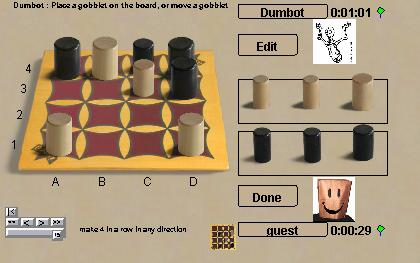

Гобблет
Гобблет это игра похожая на четыре-в-ряд, но фигуры - это стаканы
четырёх разных размеров. Можно прятать мелкие стаканы в больших, как в
матрёшках. На каждом ходе вы либо добавляете новый стакан на доску,
либо передвигает любой ваш стакан на любую пустую клетку. При добавлении
нового стакана вы можете накрыть чужой стакан меньшего размера только
если он образует ряд из трёх стаканов того же цвета.
Согласно официальным правилам
Гобблет это игра на память. Если вы коснулись стакана на доске, вы должны
ходить им. Если вы коснулись стакана, который скрывает победу для вашего
противника вы тут же проигрываете. Очевидно, в игре по сети нельзя
заставить игроков использовать только собственную память, поэтому в
стандартной игре Boardspace позволяет вам заглядывать под свои стаканы.
Строгий вариант доступен под названием GobbletM.
Боты: Самый глупый бот
бьёт новичков или невнимательных игроков, но имеет слабые места.
С другой стороны, лучший бот очень и очень хорош - настоящее
испытание даже для сильнейших игроков.
|

|